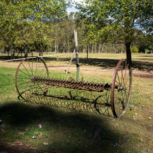
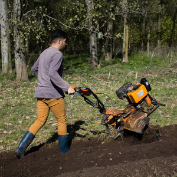

La E.E.S.A. Nº 1 "Haydée Vega De Rozzi", se encuentra ubicada sobre el acceso de General Alvear. El horario de la institución se extiende desde las 7:30 hs hasta las 17:30 hs.
La comunidad que asiste poseen recursos medios a bajos y el nivel académico de los adultos responsables de los jóvenes, entre primario y secundarios incompletos, en su gran mayoría. Cuenta con un edificio cuyas aulas se comparten con la escuela de E.S.E.A. N° 1, la primaria de adultos N° 711 y el ISFD y T N° 209, con un taller rural, una oficina de campo y los entornos formativos de huerta, vivero, apicultura, forrajetun, cunicultura, granja y un sector con diferentes sembrados.
En cooperación con el INTA se crían pollitos bebes y su recría; en algunos casos los entornos son demostrativos a la espera de poder contar con la estructura necesaria para su desarrollo.
A continuación se hace una breve síntesis del proyecto educativo institucional, el cual puede descargarse en su totalidad al final del texto de esta sección.
 Don José Luis Rozzi tenía un sueño... que se construyera una escuela de educacion agraria en General Alvear. El donó 50 hectáreas para que esto sea posible, con una única condición, que la escuela se llame como su esposa Haydeé Vega de Rozzi, una docente que dedicó toda su vida a la docencia.
Al ser 70 estudiantes inscriptos los que querían ingresar a la escuela, se realizó un sorteo, donde solo quedaron en la lista 36 estudiantes. Los primeros estudiantes comenzaron a asistir a la secundaria el 30 de Marzo del 2015, provisoriamente, en la escuela primaria N°7 de General Alvear. En la escuela provisoria, con el paso del tiempo, comenzaron a agregar distintos entornos con ayuda de la comunidad de General Alvear, quienes le donaron lo necesario para iniciar cada lugar de trabajo. Comenzaron con el entorno de la huerta, donde la comunidad donó las primeras herramientas con las que se comenzaron a trabajar. Otro entorno que se comenzó el mismo año (2015) fue el entorno avícola, que inició con una incubadora casera. También, se sumaron una pequeña cantidad de conejos, con jaulas, comederos y bebederos.
El 1 de junio del 2015, cambian dos directivos de la institución; pasando a ser Directora, Vanina Morena y Secretaria,
Pamela Severino. En el 2do año, luego de comenzar el primer año, en el mes de Octubre, Ramiro Melendez se unió al equipo
de coducción como Jefe de Area.
En 2016, se siguieron desarrollando los entornos de huerta, cunicultura, apicultura, avicultura y taller rural. Se
costruyo el invernaculo, y se adquirio una hidroponia.
En 2017, se siguen integrando nuevos entornos: Forrajes, ovejas y cerdos.
En 2018, se adquirió una estación metereologica, y se realizó por primera vez en la escuela, la producció de chorizo y
queso de cerdo.
 Tenemos como misión brindar una educación de calidad, desarrollando las habilidades cognitivas y técnico profesionales de nuestros alumnos complementadas con una formación en valores personales y ciudadanos, que les permita ampliar sus horizontes socioculturales y construir sus proyectos de vida, desarrollando una propuesta educativa que permita a todos los alumnos alcanzar los más altos aprendizajes esperados. Tanto en el ámbito profesional como en el personal lograr el mayor desarrollo de sus capacidades, adquiriendo competencias adecuadas a los requerimientos de la actual estructura educacional y del mundo productivo.
En el mes de septiembre del año 2016 se firmó un Convenio Marco, de cooperación, desarrollo y colaboración entre la UNAHUR y la E.E.S.A. N° 1 de Hurlingham. Representan a las partes el Rector Lic. Jaime Perczik y Lic Maglione Graciela respectivamente.
Síntesis de las clausulas:
Ruta Provincial N°61 Km 118
Ciudad de General Alvear
Buenos Aires
VER MAPA
eesa1gralalvear@abc.gob.ar
Fijo: ---
Celular: 2344 46 7851
Fax: ---